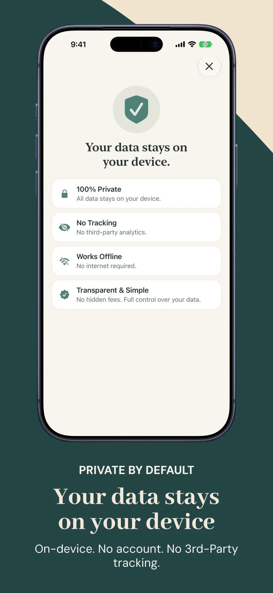

When you make the deeply personal choice to track your alcohol intake (whether stepping into a 30-day reset, practicing mindful drinking, or committing to long-term sobriety), the last thing you want is a mandatory registration screen demanding your email, phone number, and social profile.
Yet, most modern sobriety apps follow the same playbook: they push you into a cloud account, prompt you to join public comment threads, and upload your daily habit logs to remote databases. For people seeking a quiet, discreet sober companion rather than a social network, that creates unnecessary anxiety, privacy risks, and social fatigue.
Choosing a private, local-first sobriety tracker offers a calmer, distraction-free way to track your habits. Below is a practical breakdown of why offline sobriety tracking matters, the hidden risks of cloud habit apps, and what to look for in a private tracker.
| Privacy & Experience Dimension | Typical Cloud Community Apps | 100% Local-First Private Tracker (Alcohol Free Tracker) |
|---|---|---|
| Account Requirement | Mandatory email, Apple ID sign-in, or third-party OAuth | No accounts: Open the app and start tracking in seconds |
| Data Storage Location | Remote cloud servers, third-party analytics & marketing databases | 100% On-Device: Stored securely in your iPhone's local sandbox |
| Social Feeds & Comments | Public message boards, peer comparison, strangers' relapse posts | Intimate & Solitary: No public feeds, comment threads, or social comparison |
| Offline Functionality | Requires active internet connection for sync, community feeds, and auth | Full Offline Support: Fully functional on airplane mode or off-grid retreats |
| Psychological Framework | Day-count resets after a slip and public accountability pressure | Compassionate Insight: Calendar and yearly heatmap, private urge surfing, no shame |
| Pricing & Monetization | Some lock core features behind a recurring subscription | Transparent & Fair: Free core features, optional Pro (annual or lifetime) |
The Hidden Risks of Cloud-Based Sobriety Tracking
Alcohol logs and personal habit notes are among the most sensitive pieces of information you can store on a phone. Putting that data on third-party servers introduces real privacy trade-offs:
- Ad Tracking & Analytics SDKs: Many consumer wellness and habit apps include third-party analytics or marketing SDKs that share usage events and device identifiers with external platforms.
- Server Breaches: Any remote database connected to the internet can be exposed in a breach, risking personal records, dates, or journal notes.
- Legal & Corporate Transfers: Unlike medical records protected by HIPAA, consumer app data stored on corporate servers is generally governed by company privacy policies and can be transferred if a company is sold.
Why "No Community" is a Feature, Not a Flaw
Many popular sobriety apps promote their public message boards as essential. While peer support can be valuable in structured support groups or professional therapy, public in-app social feeds often backfire in everyday life:
- Trigger Loops: Scrolling through a public feed filled with vivid descriptions of heavy cravings or relapses can act as a reminder of drinking and make your own urges feel louder.
- Streak Shaming & Social Comparison: Seeing strangers boast about "1,000 Days" while you are working through Day 3 can feel discouraging. When a slip happens, people often abandon the app entirely rather than face public embarrassment.
- The Notification Trap: Replacing drinking habits with constant upvotes, badges, and comment notifications trades one distraction for another instead of helping you build quiet, steady internal confidence.
Built for Radical Privacy
Track your sobriety 100% locally on iPhone
No accounts, email collection, or cloud analytics. Your sober counter, general recovery milestones, and savings stay private in your pocket, where they belong.
Get Private Sobriety Tracker Free →
The 4 Pillars of a Truly Private Sobriety Tracker
If you prioritize peace of mind and confidentiality, look for these four design principles when choosing an alcohol tracker:
1. Instant Onboarding Without Sign-Ups
A trustworthy local tracker respects your time and privacy. You should be able to open the app, enter your quit date or last drink time, and see your dashboard right away. If an app blocks the first screen with "Sign in with Google" or asks for your email up front, it is built for marketing funnels rather than your privacy.
2. Complete Offline Reliability
Cravings do not wait for Wi-Fi or 5G coverage. Whether you are on a flight, camping, or riding the subway after work, your timer, savings counter, and breathing tools should work reliably without an internet connection.
3. General Recovery Milestones Over Fragile Streak Counters
A rigid day counter can reduce a nuanced habit change to a fragile number that resets on a single slip. A thoughtful tracker includes general recovery milestone estimates based on your alcohol-free days alongside a monthly calendar view, giving you calm context without emotional guilt.
4. Built-in Urge Surfing Without Distraction
When a 5:00 PM habit urge strikes, scrolling internet comments rarely settles a restless mind. Cravings usually rise and pass, and many people find they ease within minutes if they do not act on them. A focused private tool gives you guided paced breathing with spatial audio to help you pause and steady yourself in the moment.
How to Check Any Sobriety App's Privacy on iPhone
You do not have to take a developer's word for it, including ours. iOS gives you the tools to check what an app collects and where it connects. These five checks take about 5 minutes, plus a week of normal use for the last one.
| Check | Where to look | What a private tracker shows |
|---|---|---|
| 1. Sign-up screen | First launch of the app | Your dashboard or a quit-date picker, not an email or "Sign in with" prompt |
| 2. Airplane mode test | Control Center → airplane mode, then open the app | Timer, check-ins and savings all still work |
| 3. App Store privacy label | The app's App Store page → "App Privacy" | Few or no items under "Data Used to Track You" and "Data Linked to You" |
| 4. App Privacy Report | Settings → Privacy & Security → App Privacy Report (turn it on, use the app for a week) | Few or no network domains contacted by the app |
| 5. Backup you control | The app's settings | An export file you save where you choose, instead of a required cloud account |
The privacy label is written by the developer, so treat it as a starting point. The App Privacy Report is recorded by iOS itself, which makes it the better test of what an app actually connects to. If you also want the reasoning behind leaving community apps, see our I Am Sober alternatives comparison.
Reclaiming Control of Your Personal Journey
Your relationship with alcohol is personal and evolving. Whether your goal is long-term sobriety, an exploratory 30-day dry challenge, or mindful moderation (see how to drink less without quitting and the 30-day dry challenge plan), you deserve a quiet space to track your progress in private.
By choosing a local-first, zero-account tracker, you keep your records off corporate servers, step away from noisy social comparison, and keep a calm tool on your phone dedicated solely to your goals.